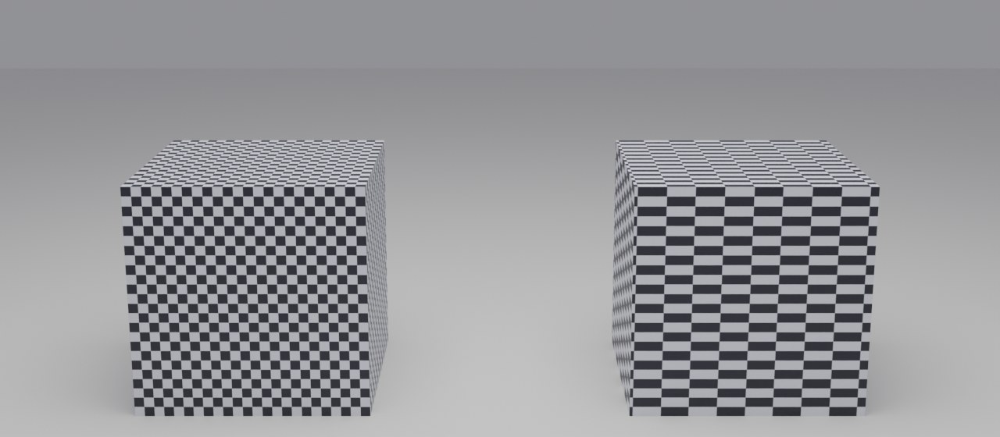

Bonus lesson
UV Unwrapping
In the Image Texture lesson you wrapped an image around an object with automatic projection. To control exactly which part of an image lands on which part of a model, you need UV unwrapping. The manual describes it as projecting the surface of your 3D model onto a 2D image: every point in the UV map corresponds to a vertex in the mesh, and every face in the UV map corresponds to a mesh face. The coordinates use the letters U and V to stay distinct from the XYZ of 3D space, which is where the name comes from.
1. Why a test grid matters
When a flat image has to cover a 3D shape, some stretching is almost unavoidable, and a bad unwrap smears your texture. The manual's workflow includes adding a test image to check for distortion before you do real texture work. A checkerboard is the standard test: the cells should come out as even squares. If they turn into rectangles, that part of the surface is stretched and needs a different unwrap or better seams.

2. The workflow
The manual lays out the general steps. Unwrapping is done in Edit Mode, and meshes are not created with UVs, so you map the faces first, then edit the result. Switch to the UV Editing workspace at the top of the screen, which shows the UV Editor next to the 3D Viewport. Then: mark seams if your model needs them, select the mesh faces, pick a mapping method from the UV > Unwrap menu, adjust the settings in the Adjust Last Operation panel, add a test image to check for distortion, and finally adjust the UVs in the UV Editor. Unwrapping creates one or more UV islands in the editor.
3. When to unwrap
The manual recommends starting to unwrap when only minor geometry adjustments remain on your model. If you add or subdivide faces after unwrapping, Blender adds the new geometry to the UV map for you, but you may need extra mapping or editing, so it pays to finish the shape first.
Read the manual introduction to UV unwrapping.
Exercise
Add a cube and switch to the UV Editing workspace. In Edit Mode, select everything, press U and choose Unwrap. Give the cube a material with a checkerboard image, as in the Image Texture lesson, and inspect each face for square cells. Now select one face in the UV Editor, scale it down on one axis, and watch that face's checkers turn to rectangles on the model, the same distortion you would get from a careless unwrap.